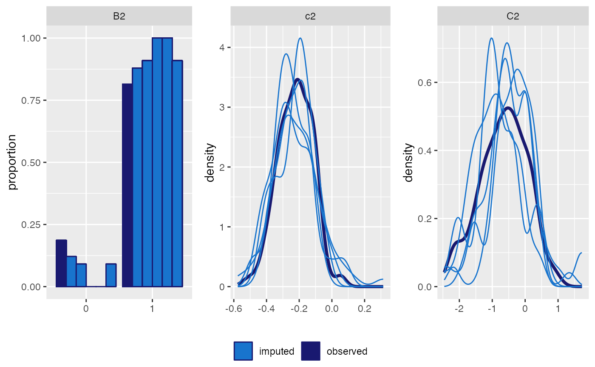

Plots densities and bar plots of the observed and imputed values in a long-format dataset (multiple imputed datasets stacked onto each other).
plot_imp_distr(data, imp = "Imputation_", id = ".id", rownr = ".rownr", ncol = NULL, nrow = NULL, labeller = NULL)
| data | a |
|---|---|
| imp | the name of the variable specifying the imputation indicator |
| id | the name of the variable specifying the subject indicator |
| rownr | the name of a variable identifying which rows correspond to the same observation in the original (un-imputed) data |
| ncol | optional; number of columns in the plot layout; automatically chosen if unspecified |
| nrow | optional; number of rows in the plot layout; automatically chosen if unspecified |
| labeller | optional labeller to be passed to
|
mod <- lme_imp(y ~ C1 + c2 + B2 + C2, random = ~ 1 | id, data = longDF, n.iter = 200, monitor_params = c(imps = TRUE), mess = FALSE) impDF <- get_MIdat(mod, m = 5) plot_imp_distr(impDF, id = "id", ncol = 3) 